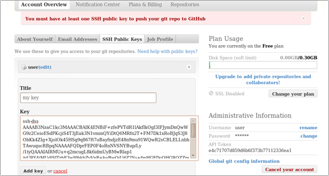
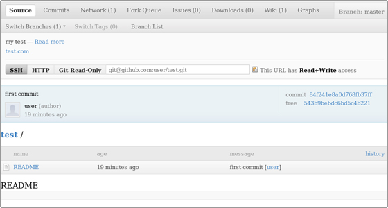

In this section you will find a full scenario on how to use GIT to create a project, add files,commit modifications and upload them in the remote repository.
After the GIT installation you should set your configuration. Use the following commands:
git config --global user.name "Your Name"
git config --global user.email "name@yourdomain.com"
This step is important since the above details will appear when you commit modifications in the repository. In this way your collaborators will know who has updated the repository content.
Next, you should generate an SSH key. You must have at least one SSH public key to push your git repository to GitHub.
You can follow the detailed instructions listed in the SiteGround's Knowledge Base in order to generate an SSH key:
http://kb.siteground.com/article/How_to_generate_an_SSH_key_in_Linux.html
Add the key through the GitHub interface.

Further, create a working folder for your project and enter that directory:
user@user:/GIT# mkdir test
user@user:/GIT# cd test
Initialize a new GIT repository:
user@user:/GIT/test# git init
An empty Git repository is initialized: /GIT/test/.git
Create a file in the working folder:
user@user:/GIT/test# touch README
You can check the status of files in the index versus the working directory:
user@user:/GIT/test# git status
# On branch master # # Initial commit # # Untracked files: # (use "git add
Next, add the newly created file to the index:
user@user:/GIT/test# git add README
Once again check the status of the files in the index versus the working directory:
user@user:/GIT/test# git status # On branch master # # Initial commit # # Changes to be committed: # (use "git rm --cached
README Proceed with the first commit:
user@user:/GIT/test# git commit -m 'first commit' [master (root-commit)
84f241e] first commit 0 files changed, 0 insertions(+), 0 deletions(-)
create mode 100644 README
Check the status after the commit operation:
user@user:/GIT/test# git status # On branch master nothing to commit (working directory clean)
Add the remote repository to your existing local one:
user@user:/GIT/test# git remote add origin git@github.com:user/test.git
Push the modification to the remote repository:
user@user:/GIT/test# git push origin master Counting objects: 3, done.
Writing objects: 100% (3/3), 207 bytes, done. Total 3 (delta 0),
reused 0 (delta 0) To git@github.com:user/test.git * [new branch] master -> master
You can log in your GitHub account and check the newly pushed file:

In this tutorial chapter you have learned how to create a new project, set a new file and upload it to the remote repository.